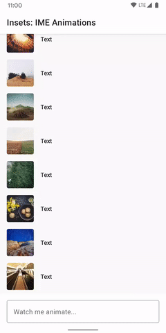

Insets for Jetpack Compose¶

Insets for Jetpack Compose takes a lot of the ideas which drove Insetter for views, and applies them for use in composables.
Usage¶
To setup Insets in your composables, you need to call the ProvideWindowInsets function and
wrap your content. This would typically be done near the top level of your composable hierarchy:
setContent {
MaterialTheme {
ProvideWindowInsets {
// your content
}
}
}
Note: this library does not disable window decor fitting. For your view hierarchy to able to recieve insets, you need to make sure to call: WindowCompat.setDecorFitsSystemWindows(window, false) from your Activity.
ProvideWindowInsets allows the library to set an OnApplyWindowInsetsListener on your content's host view. That listener is used to update the value of an ambient bundled in this library: AmbientWindowInsets.
AmbientWindowInsets holds an instance of WindowInsets which contains the value of various WindowInsets types. You can use the values manually like so:
@Composable
fun ImeAvoidingBox() {
val insets = AmbientWindowInsets.current
Box(Modifier.padding(bottom = insets.ime.bottom))
}
...but we also provide some easy-to-use Modifiers.
Modifiers¶
We provide two types of modifiers for easy handling of insets: padding and size.
Padding modifiers¶
The padding modifiers allow you to apply padding to a composable which matches a specific type of inset. Currently we provide:
Modifier.statusBarsPadding()Modifier.navigationBarsPadding()Modifier.systemBarsPadding()
These are commonly used to move composables out from under the system bars. The common example would be a FloatingActionButton:
FloatingActionButton(
icon = { Icon(...) },
modifier = Modifier
.align(Alignment.BottomEnd)
.padding(16.dp) // normal 16dp of padding for FABs
.navigationBarsPadding() // Move it out from under the nav bar
)
Size modifiers¶
The size modifiers allow you to match the size of a composable to a specific type of inset. Currently we provide:
Modifier.statusBarsHeight()Modifier.navigationBarsHeight()Modifier.navigationBarsWidth()
These are commonly used to allow composables behind the system bars, to provide background protection, or similar:
Spacer(
Modifier
.background(Color.Black.copy(alpha = 0.7f))
.statusBarsHeight() // Match the height of the status bar
.fillMaxWidth()
)
PaddingValues¶
Compose also provides the concept of PaddingValues, a data class which contains the padding values to be applied on all dimensions (similar to a rect). This is commonly used with container composables, such as LazyColumn, to set the content padding.
You may want to use inset values for content padding, so this library provides the Insets.toPaddingValues() extension function to convert between Insets and PaddingValues. Here's an example of using the system bars insets:
LazyColumn(
contentPadding = AmbientWindowInsets.current.systemBars.toPaddingValues()
)
For a more complex example, see the EdgeToEdgeLazyColumn example:
{kind=link}
Animated Insets support (Experimental)¶

The library now has experimental support for WindowInsetsAnimations.
The new imePadding() and navigationBarsWithImePadding() modifiers allow content to animate with the device's on screen-keyboard (IME), while it is being animated on/off screen. This currently only works when running on devices with API 30+.
To enable animated insets support, you need need to new ProvideWindowInsets overload, and set windowInsetsAnimationsEnabled = true.
ProvideWindowInsets(windowInsetsAnimationsEnabled = true) {
// content
}
You can then use the new navigationBarsWithImePadding() modifier like so:
OutlinedTextField(
// other params,
modifier = Modifier.navigationBarsWithImePadding()
)
See the ImeAnimationSample for a working example.
IME animations¶
If you're using the animation insets support for IME/keyboard animations, you also need to ensure that the activity's windowSoftInputMode is set to adjustResize:
<activity
android:name=".MyActivity"
android:windowSoftInputMode="adjustResize">
</activity>
The default value of windowSoftInputMode should work, but Compose does not currently set the flags necessary (see here).
Download¶
repositories {
mavenCentral()
}
dependencies {
implementation "dev.chrisbanes.accompanist:accompanist-insets:<version>"
}
Snapshots of the development version are available in Sonatype's snapshots repository. These are updated on every commit.
Something not working?¶
If you find that something isn't working correctly, here's a checklist to try:
- Check that you've called
WindowCompat.setDecorFitsSystemWindows(window, false)in your Activity. Unless you do that, the window decor will consume the insets, and they will not be dispatched to your content. - If it's something related to the keyboard, check that the Activity's
windowSoftInputModeis set toadjustResize. Without that, IME visibility changes will not be sent as inset changes. - If you're using
ProvideWindowInsets(orViewWindowInsetObserver) in multiple layers of your view hierarchy (i.e. in the activity, and in a fragment), you need to turn off consuming of insets. By defaultProvideWindowInsetsandViewWindowInsetObserverwill completely consume any insets passed to it. In the previous example, this means that the activity content will get the insets, but the fragment won't. To disable consuming, passconsumeWindowInsets = falsetoProvideWindowInsetsorViewWindowInsetObserver.start().